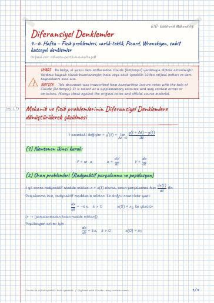

Differential Equations · Digital lecture note
Weeks 4–6 – Physical problems, existence–uniqueness, Picard, Wronskian, constant-coefficient equations
Diferansiyel Denklemler – 4.–6. Hafta – Fizik problemleri, varlık-teklik, Picard, Wronskiyen, sabit katsayılı denklemler
- Course
- Differential Equations (MAT215)
- Semester
- Semester 3 · Fall 2022–23
- Format
- PDF · 4 pages · 0.1 MB · handwriting-style LaTeX
- Language
- Turkish
- Original note
- dif-notu-part2-4-6-hafta.pdf
Open the PDF (0.1 MB)LaTeX source (.tex)Original handwritten note

What is in this note?
Section headings of the note (in Turkish):
- Mekanik ve fizik problemlerinin Diferansiyel Denklemlere dönüştürülerek çözülmesi
- (1) Newtonun ikinci kuralı
- (2) Oran problemleri (Radyoaktif parçalanma ve popülasyon)
- (3) Karışım problemleri
- Soğuma Problemleri
- Varlık ve teklik
- (Varlık ve teklik teoremi)
- Picard yaklaşımı
- Wronskiyen nedir
- Abel's teoremi
- 2. derece sabit katsayılı homojen çözümündeki kurallar
Text of the note
Show as plain text (Turkish; formulas and drawings are not included)
Mekanik ve fizik problemlerinin Diferansiyel Denklemlere dönüştürülerek çözülmesi
(1) Newtonun ikinci kuralı:
(2) Oran problemleri (Radyoaktif parçalanma ve popülasyon)
t yıl sonra radyoaktif madde miktarı x = x(t) olursa, onun parçalanma hızı dx(t)dt dir.
Parçalanma hızı, radyoaktif maddenin miktarı ile doğru orantılıdır yani:
( x → [parçalanmadan kalan madde miktarı])
Popülasyon artımı için
V(t) t anındaki karışımın hacmi
x(t) t anındaki tanktaki tuzun kütlesi
birim zamanda giren tuzun miktarını hesaplarız
herhangi bir anda kaptaki karışımın hacmini buluruz
tuzun miktarını 2. de bulduğumuz hacime bölerek litre başına düşen tuzu buluruz
hızla çarparak çıkan tuzu hesapla
sonra denklemi kurarız
başlangıç koşulu x_0 belirlenir ve denklem çözülür
T_e = onu çevreleyen ortamın sıcaklığı
Cismin sıcaklığının zamanla değişimin hızı
Varlık ve teklik
D^2 bölgesinde verilmiş f(x,y) fonksiyonu (x,y_1) ve (x,y_2) D için
eşitsizliğini sağlayacak bir L>0 sabiti bulunursa, f(x,y) y değişkenine göre
Lipschitz koşulunu sağlar. (tek)
O halde f(x,y) fonksiyonu Lipschitz koşulunu sağlar.
f(x,y) D bandından sürekli ise → çözüm var
f(x,y) D '' y 'ye göre lipschitz koşulunu sağlarsa → tek
n . Picard yaklaşımının hata payı şu şekilde hesaplanır
M : f(x,y) için üst sınır
2. derece sabit katsayılı homojen çözümündeki kurallar
denklemin kökleri olmak üzere
bu kurallar genişletilerek yüksek mertebeli homojen dif denklemlerde kullanılır